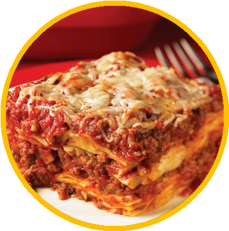

Lasagna

Description
This is your classic, deli style lasagne recipe with a rich, beef mince filling and a deliciously creamy béchamel sauce.
It's not the speediest lasagne. You'll need to set aside a couple of hours to prepare and cook the sauce, but you will be well rewarded.
If you're looking for a cheat's lasagne, one that uses a pre made sauce, we have you covered. In fact we have a whole host of other lasagne recipes from a Mexican-style lasagne to a vegetarian version.
Ingredients
- 2 tbsp. olive oil
- 1 large onion, finely chopped
- 1 stick celery, finely diced
- 1 large carrot, peeled and finely diced
- 2 garlic cloves, crushed
- 2 tbsp. tomato puree
- 1 tsp. dried oregano
- 500 g (1lb 2oz) beef mince
- 200 ml (7 fl oz (⅓ pint)) red wine
- 400g tin chopped tomatoes
- 100 ml (3 ½ fl oz) hot beef stock
For the béchamel sauce
- 1 garlic clove
- 1 fresh bay leaf
- 50 g (2oz) butter
- 50 g (2oz) plain flour
- 600 ml whole milk
- about 9 sheets dried egg lasagne (enough for 3 layers of pasta)